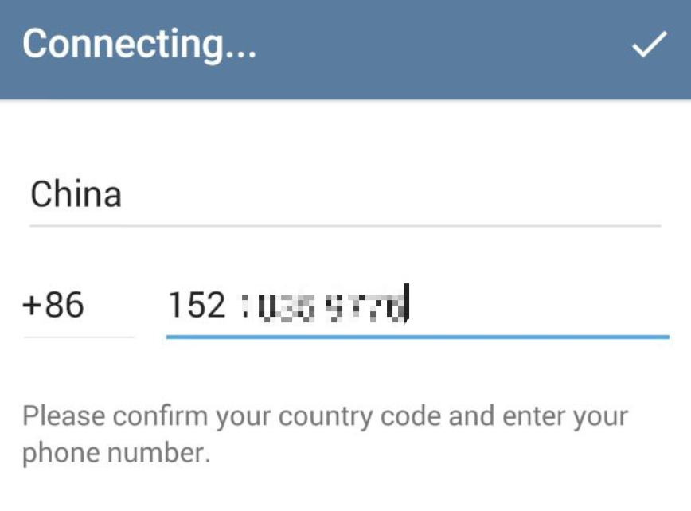
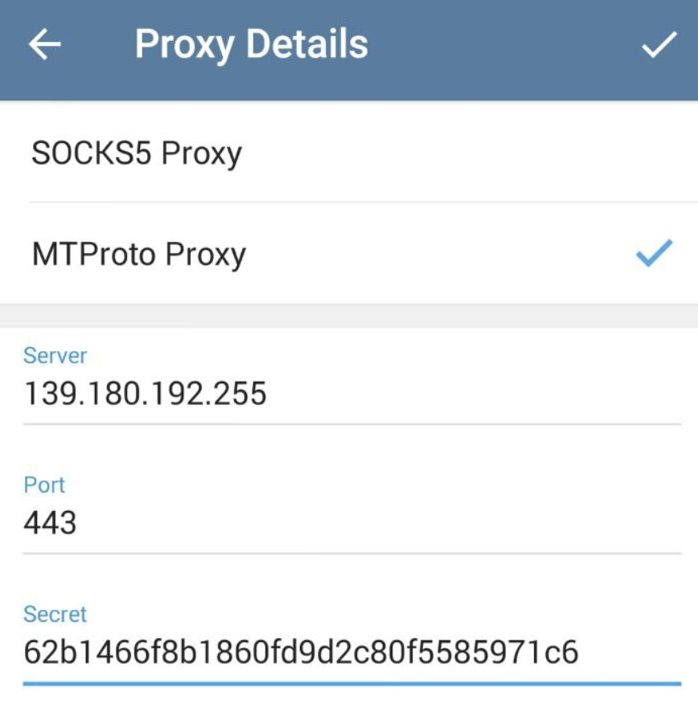
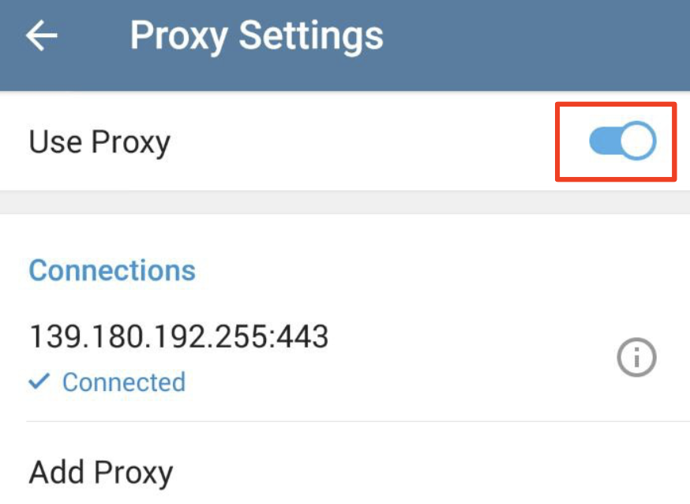
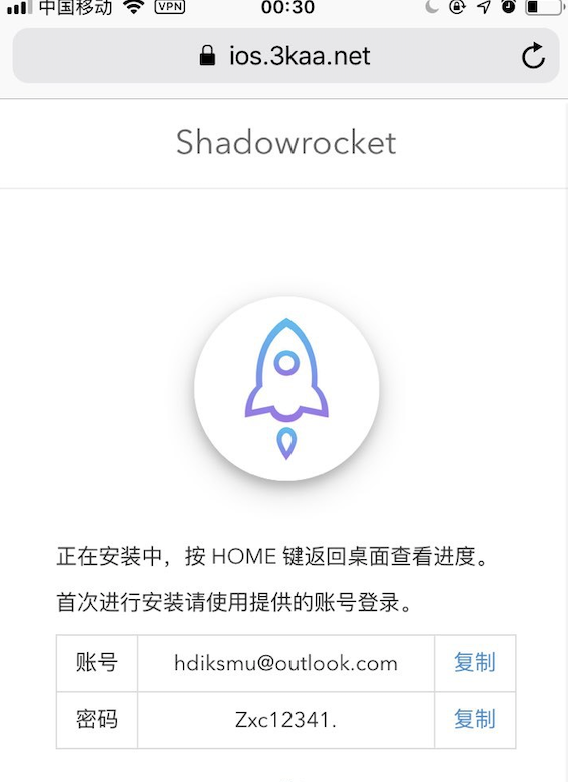

用户使用帮助
Table of Contents
如果想要一起合租直连链路代理的话,你需要安装telegram,这样你能够及时的获取最新的代理服务器帐号更新情况。
socks代理目前延时50-100ms左右,每月5-10元不等.
1 telegram 安装说明
android 安装 telegram
安卓上下载telegram需要在google play下载,由于大陆谷歌应用商店被墙,这里提供一个百度云下载连接
链接: https://pan.baidu.com/s/1xGyRbDw2YMondATpJ6gs9A 提取码: ex26
下载telegram到手机后,使用手机注册之前需要添加代理才能接收到短信验证码:

填写手机号后,点击
Connecting...,添加代理
选择mtproto代理，server:
139.180.192.255,port:443,secret:62b1466f8b1860fd9d2c80f5585971c6
最后一定要勾选 use proxy, 此时回到最开始的界面使用手机号注册接收验证码即可
iphone 安装 telegram
ios平台安装,可以直接在app store 下载telegram,注册方法同安卓差不多,先用手机号注册,然后会提示你需要添加
代理才能收到短信验证码,代理配置同上
2 自建socks代理使用说明:
安卓 环境可以直接到shadowsocks 官网下载,目前来看官网被墙，这里提供一个百度云下载链接
链接: https://pan.baidu.com/s/1wMgiKZYc5nh08FuOFP4Ixw 提取码: q8vq
iphone 环境可以安装shadowrocket使用代理,目前shadowrocket国内已经被下线,安装可以使用非国区帐号购买安装.
非中国区苹果帐号可以到淘宝购买,这里提供一个地址，可以在线免费安装的方法:在ios上打开网站https://ios.3kaa.net/
按照提示操作安装shadowrocket

下载安装shadowrocket后,运行程序需要登录非中国区帐号授权,按图上帐号登录即可
如果安装失败可以再尝试使用下面方法安装(参考):
用iOS设备自带的 Safari 浏览器，点下面的链接：
itms-services://?action=download-manifest&url=https://www.shadowroket.me/ipa.plist首次安装请使用账号：shadowroket@163.com 密码：shadowroketMe6登陆验证（不行就7.8.9…）